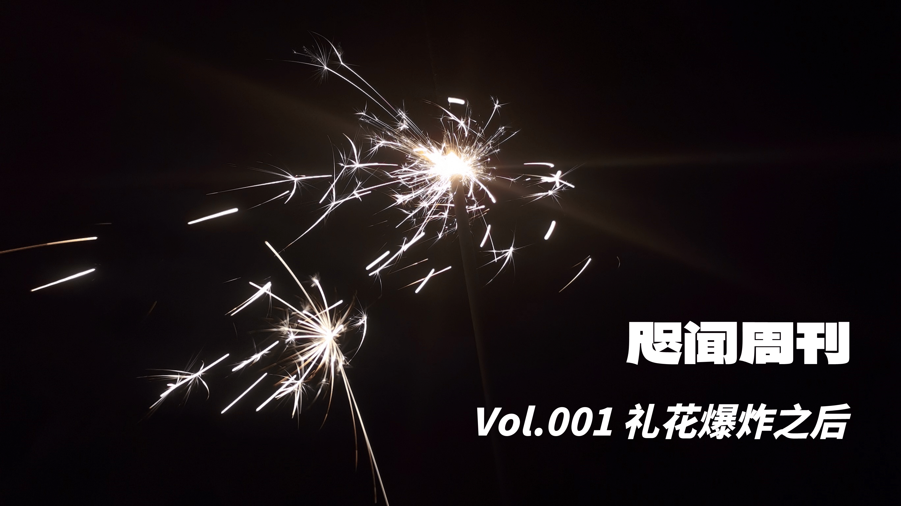
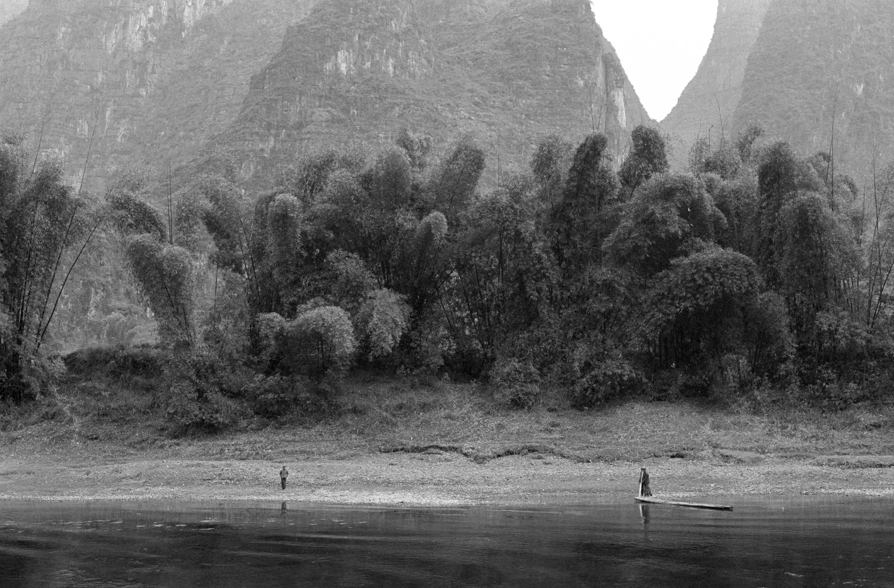
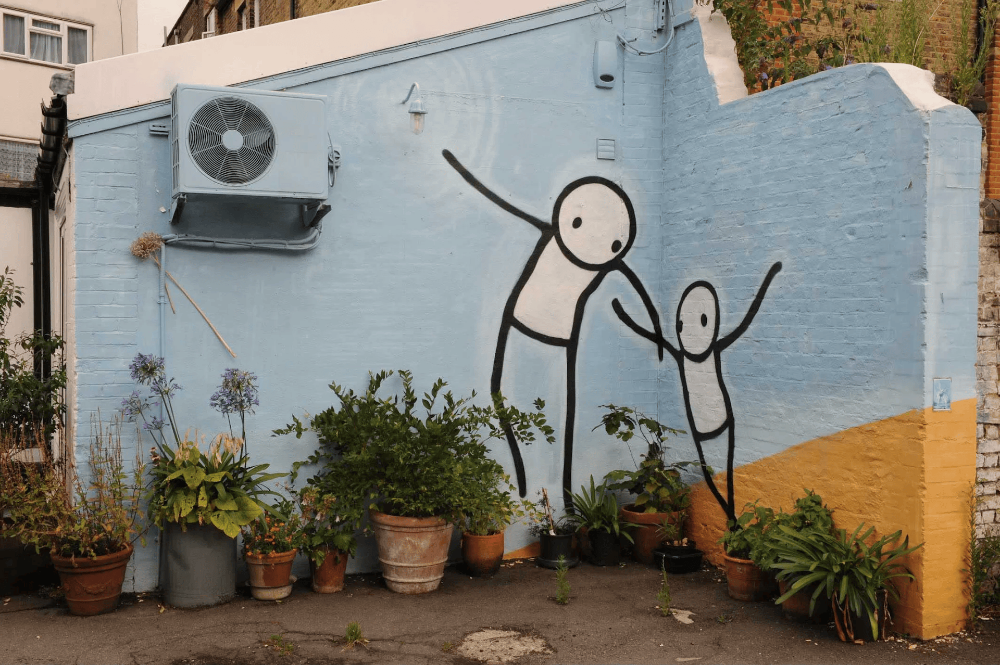
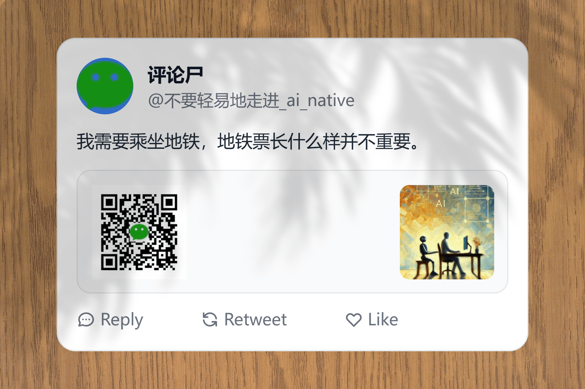
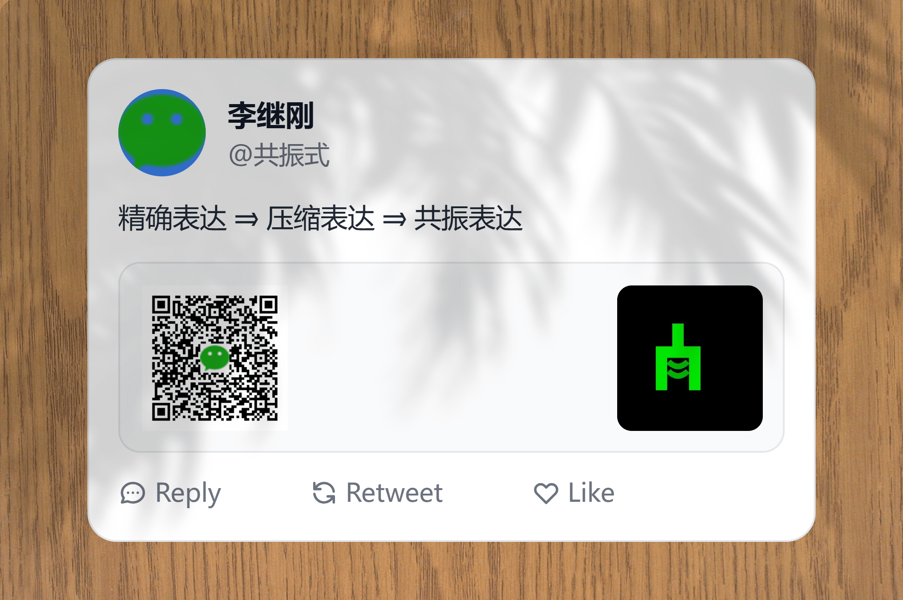
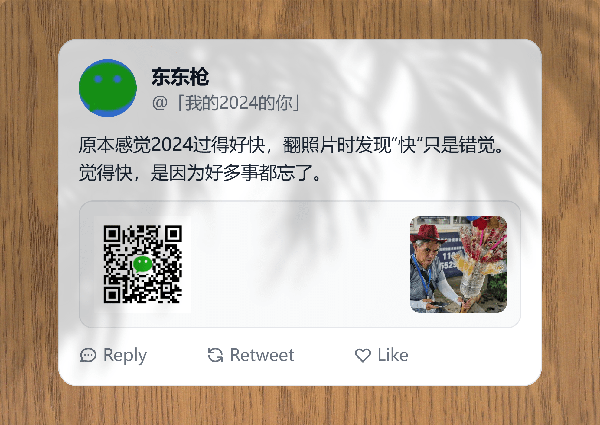

“礼花爆炸之后，发现有几个亮片永远留在空中，那是平时不会抬头看的星星。”
👋 发刊词
网络上遍布的图文内容，让人觉得杂志的“辫子剪了但神还留着”（替你验证过了，不是“鞭子剪了”）。但我挤出“咫闻”二字作为刊名，你就能感觉出来，对于这个“神”，我至少是个“不可知论者”。
小时候抓阄我就抓的杂志，虽然不喜欢摸这种“油腻”触感的纸张。时尚杂志是那么厚的一本广告，里面的面孔又那么陌生，有时我会想，他们和今天 AI 梦见的那些美丽而哀伤的面孔有什么区别呢？
除了时尚杂志这种夸张的外骨骼和第二性征之外，许多杂志是文字堆出来的，是喜欢讲笑话的。在火车这种“方外之地”，孩童时期的我会像看电视一样，连续刷完三四本杂志。后来学会上网了，才发现杂志里“E 站”之类的词，无非是注明这里面汇总了一些网络段子。
我后来上微博（实际就是个小学生），化身网络爬虫，摘录段子无数，定期用 PPT 总结起来，比我开组会做 PPT 要勤快不少。无他，只是因为我小时候认为 PPT 是最像杂志的媒介了。
这种摘录与我今天选择发布的内容没有本质区别，同样是希望在网上浏览过的碎片能够在局部浮现出一些模式，成为巨幅拼图的一角。不过，哪怕只是产生一种“得到”的错觉也好。
形式不固定，更新时间也不固定，叫“周刊”只是因为比较好听。作为实验项目，趁着年还新，写起来再说。
🐎 跑马场
断章而取义者也，很多内容甚至不是摘录而是转述，请谨慎阅读。
📹 片羽之间的艺术

中国的绝句讲究在极其有限的篇幅中塑造一个完整的小宇宙，诗中需有由近而远或由远而近的变化，产生包纳的效果。日本俳句的内在精神却是高度片段性的，重点在于如何巧妙、有意义地截取一个角落、一个断片，其中充满暗示，让我们拉着这暗示线索去向外想象。
……川端康成提示了，也示范了另一种看待人的方式。他用文学之笔记录了人与人之间更真实的认识方式，在不同时空中一个片段一个片段地接触互动，留下一个片段一个片段的认知，而且每一个片段都包裹混同了那个特定时空的因素。他不刻意将这些片段连贯起来，甚至是刻意地彰显其片段性质，成为他文学笔法的重要特色。他的叙述时态很少是线性往前一贯的，而是反复迂曲、来来去去灵活穿梭。
——《银河坠入身体》杨照
如果每一个存在之物都被连续不断地拍摄，那么每一张照片也将失去意义。一张照片是它所记录的事件的一条讯息，即：我已做出决定，我之所见是值得被记录下来的（I have decided that seeing this is worth recording.）。
不考虑“怪里怪气的”（约翰·伯格原话）影棚作品，摄影不像绘画，没有自己的语言，只有事件本身的语言。摄影也不像电影，不能操控时间，只能做出孤立哪一个瞬间的决断。但这种制约给了照片独一无二的力量：已呈现的会激发出未被呈现的。故可以如此解码前面的“讯息”：我所相信的这何以值得被观看，要通过所有我不愿去展示的来判断，因为它们也包含在其中。
——《理解一张照片》约翰·伯格
📛 压抑制造
压抑不是树上长出来的，你知道——那需要耐心，需要专注力，需要有献身和自我牺牲精神的父母，和勤奋努力、专心致志的小孩，才能在短短几年的时间创造出一个真正拘谨压抑的人。
——《波特诺伊的怨诉》菲利普·罗斯
常年教育，使得有些读书人看起来都不如动物灵巧，根本不像是经过百万年进化出来的。现代学校使人在学校的规训下变得脸色苍白，生命活力大为降低，逐渐丧失了凭借直觉使用身体的能力。艾瑞斯·杨（Iris Young）曾分析过男孩和女孩的活动的差别，男孩扔东西全身使劲儿，女孩就是手使劲儿，文化不允许后者自然地、投入地使用身体。现代大校对男女一视同仁，无论男女，动胳膊动腿都得深思熟虑，把一切使用身体的珍贵直觉都改造成经过审查的礼仪活动，一切都事关得体与否。
苏格拉底曾经说过，“未经审视的人生是不值一过的”。我对这句话的感受是消极的，觉得处处审视的人生是令人难过的。
——《日常的深处》王小伟
🧘♂️ “我们这一代人最伟大的发明”

The greatest discovery of my generation is that a human being can alter his life by altering his attitudes of mind.
人可以通过改变心态来改变生活，这是我们这一代人最伟大的发明。——威廉·詹姆斯
积极的情绪和消极的情绪，都可以提升或者降低创造力。关键不在于情绪的类型，而是在于情绪的强度。积极情绪的主要作用是提高认知的开放度和灵活性，消极情绪的主要作用是激发人们的专注力和深入的探究欲。
从理想状态来说，产生创造力最有效的方式，不是单单有一种情绪，而是让不同的情绪同时存在于我们的身体，而且我们还要能驾驭住它们，不能让它们挤占认知带宽。这是对人的自主性的考验。
——《情绪就是你的创造力》李方圆解读
📰 报刊亭
选择几篇时文，速朽不是问题。
1️⃣ 不要轻易地走进 AI 原生

AI 技术在应用中不应被视为独立的产品，而应作为现有成熟产品中的一个功能或补充。正如 WPS 的成功在于其界面、功能与文件协议与 Microsoft Office 完全一致，将 AI 融入到成熟的产品中，作为提升效率和用户体验的工具，才是更合理的选择。
2️⃣ 共振式

“共振式”Prompt 写法通过在作者脑海中构建画面、氛围和味道，为 LLM 提供丰富的创作情境，使其在设定的场域空间中自由发挥，产生独特且多样化的创意成果，可谓 AI 版创意写作。
3️⃣ 我的 2024 的你

一年过去，值得找时间翻一翻相册。